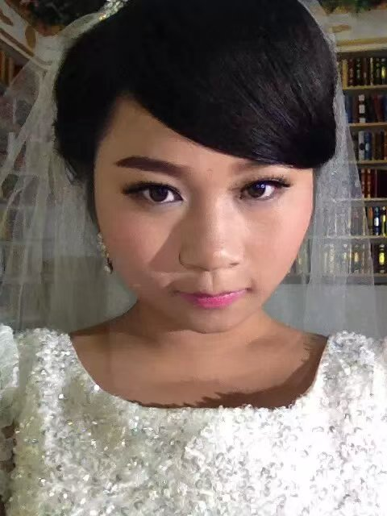
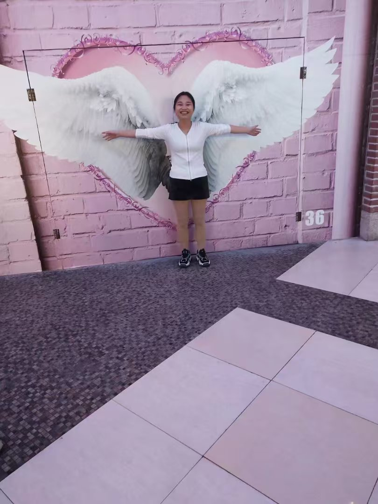

第29个精彩的生日
珍贵回忆



视频
点击播放
专属歌曲，只为你唱 ✨
给姐姐的祝福
亲爱的姐姐：
你的生日到了，一直没咋认真给你准备过礼物、最近良心发现了，觉得应该好好给你准备一次生日礼物。其实我觉得你为我牺牲了很多，提前下学，把上学的机会留给我。这些年我每年的新衣服都是你给我买的，我经常听我涛哥说，你姐操心太多，又是这个家，又是豪豪，雯雯，又是你。还有我还记得小时候我涛哥给我说过的一句话，有啥想要的，就说，因为你姐想让别人有的东西，你也有，这句话我始终记得。老姐，我比你幸运，因为你是我姐！
新的一岁，只希望你每天都能睡个好觉、吃喜欢的食物、做让自己开心的事，健康和快乐永远排在第一！
对了，记得点上面的按钮，有我给你唱的歌，虽然不算专业，但每一句都是真心～
永远爱你的弟弟
2025年8月29日